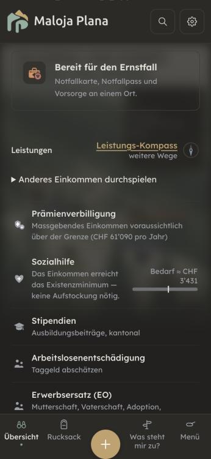
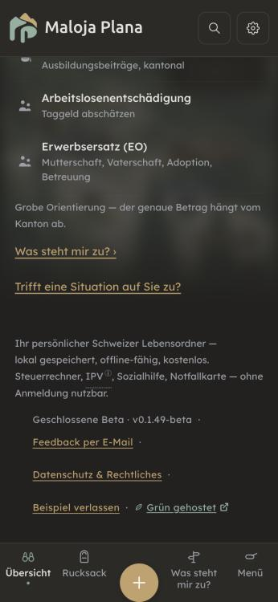
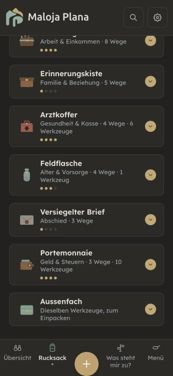
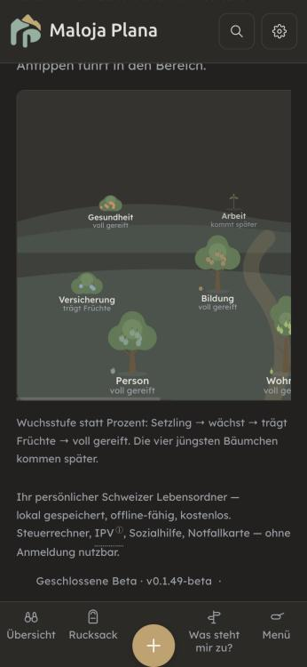
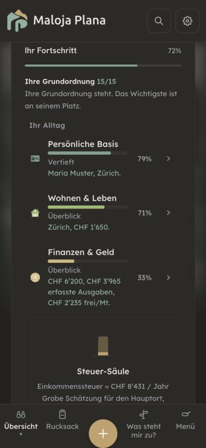
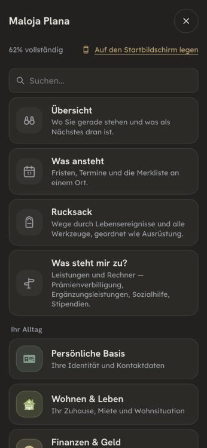
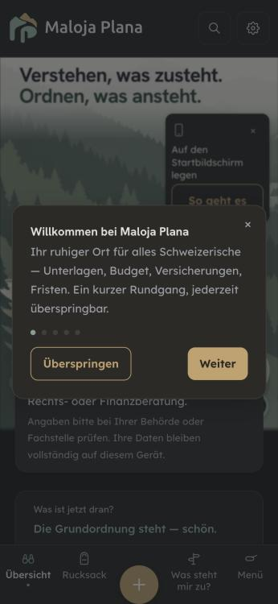
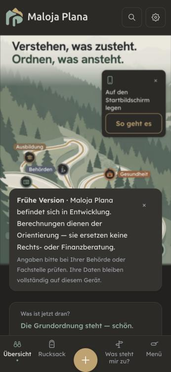

Durchgang 11.11.2026 auf main c865f518. Erste von fünf Gruppen der Seiten, die die Kapitel-Befunde 1–7 nicht erfassen (Inventar siehe Gesamtbefund, Abschnitt 5, Punkt 5). Zehn Seiten: Übersicht, Menü, Suche, «Was steht mir zu?», Schnellcheck («Schritt für Schritt»), Rucksack, Obstgarten, Onboarding, Rundgang (Tour) und der Hinweis auf fällige Erinnerungen. Gemessen im Browser auf einem eigenen Server aus diesem Arbeitsbaum (375 px, Beispiel «Maria Muster, Zürich»; die Bilder sind im Dunkelmodus). Das Onboarding liegt hinter dem Beta-Tor und ist nur am Code geprüft, nicht im Browser. Fachprüfung in zwei Teilen am Volltext: Zahlen, Voraussetzungen und Kantonslisten (swiss-precision-pruefer; Fedlex AIG Fassung 1.11.2026, AsylG, ELG 2026 und 2027, AHVG, FamZG, RTVG, KVG, OR; kantonale Erlasse GE, SO, Amtsseiten VD, TI, ZG, FR, GR; reka-ferienhilfe.ch) und Rechtsaussagen, Hinweise, Datenschutz (rechts-pruefer). Kernstellen von Hand im Code bestätigt (Lebenssituationen.jsx prüft keinen Ausweis; hatAusweisFNS nur in Schnellcheck, IPV- und Sozialhilfe-Rechner). Sprachprüfung über 760 Schlüssel in fünf Sprachen. Gebaut ist nichts.
Gut: Was die App über Daten sagt, stimmt am Code: kein fetch, kein sendBeacon in src, CSP connect-src 'self', «Problem melden» öffnet nur einen Mail-Entwurf. «Kein Konto, keine Cloud» und «kostenlos» sind redlich (Beiträge freiwillig, nichts gesperrt). «Was steht mir zu?» trägt drei klare Hinweise (verspricht nichts, die Stelle entscheidet, bleibt auf dem Gerät). Am Volltext bestätigt: IPV ruht bei Sozialhilfe für F/N/S (AsylG Art. 82a Abs. 7) auf der Karte «Asyl», Krankenkasse innert drei Monaten mit Schutz ab Zuzug (KVG Art. 3, 5), tiefere Prämie unter 26 (KVG Art. 61 Abs. 3), Waisenrente bis 18 bzw. 25 (AHVG Art. 25), Kurzurlaub OR Art. 329h, Kassenwechsel-Frist auf der Übersicht (KVG Art. 7 Abs. 2), Anmeldung vor Arbeitsantritt (AIG Art. 12 in der Fassung ab 1.11.2026), Quellensteuer-Antrag bis 31. März (DBG Art. 89a Abs. 3), Familien-EL-Altersgrenzen SO, GE, TI, VD. Keine fehlenden Übersetzungsschlüssel, kein ß, Sie/du in Deutsch sauber.
| # | Seite | Befund | Empfehlung |
|---|---|---|---|
| L1 | Was steht mir zu?, Schnellcheck | Die Karten «Sozialhilfe» (Lebenslagen «Geld knapp», «Ohne Arbeit», «Halbwaise» u. a., de.js:43, 149, 163) und der Weg «Sozialhilfe» aus den Angaben (data/anspruchWege.js:26-37) sagen «Das ist ein Recht, kein Entgegenkommen» und prüfen den Ausweis nicht. Für Menschen mit Ausweis B oder L kann Sozialhilfe ein Grund sein, die Bewilligung zu widerrufen (AIG Art. 62 Abs. 1 Bst. e), bei C bei dauerhaftem Bezug in erheblichem Mass (Art. 63 Abs. 1 Bst. c; Fassung 1.11.2026). Wer dem Satz folgt, riskiert den Aufenthalt. Die Sozialhilfe-Seite selbst sagt es seit Kapitel 3 richtig (de.js:3207), die Einstiegsseiten nicht. | Den geprüften Satz aus Kapitel 3 («Ohne Schweizer Pass kann der Bezug von Sozialhilfe Folgen für die Aufenthaltsbewilligung haben; lassen Sie sich vorher … beraten.») an jede Sozialhilfe-Karte und den Sozialhilfe-Weg hängen, bei unbekanntem oder ausländischem Ausweis. Mit Test. |
| L2 | Was steht mir zu?, Schnellcheck Schritt 3 | Für Ausweis F, N oder S zeigen beide Seiten den IPV-Pegel bzw. -Weg ohne Einschränkung (Lebenssituationen.jsx:313-321, AnspruchCheck.jsx:52-54). Solange Sozialhilfe bezogen wird, ruht der Anspruch (AsylG Art. 82a Abs. 7). Der Schnellcheck Schritt 1 sagt es (Schnellcheck.jsx:251), die anderen zwei nicht. | Denselben Satz ipv.ruhtMitSozialhilfe mit derselben Bedingung hatAusweisFNS an beiden Stellen. |
| L3 | Was steht mir zu? (Familien-EL) | «Ihr Wohnkanton kennt Ergänzungsleistungen für Familien … hängt etwa vom Alter der Kinder und vom Einkommen ab» (de.js:47, 62). In allen vier Kantonen ist eine Mindest-Wohnsitzdauer Voraussetzung: GE 5 Jahre und Erwerb 40 % bzw. 90 % (LPCC art. 36A), SO 2 Jahre (SG § 85bis), VD 3 Jahre und gültige Bewilligung, TI 3 Jahre für Schweizer, 5 für Ausländer. | «… vom Alter der Kinder, vom Einkommen, von der Wohnsitzdauer im Kanton und vom Aufenthaltsstatus ab.» |
| L4 | Was steht mir zu? (EL) | «Wenn die AHV-Rente die Lebenskosten und Miete nicht deckt, ergänzt die EL sie» (de.js:75, 134, 173). Es fehlen Wohnsitz in der Schweiz (ELG Art. 4), Karenzfrist für Ausländerinnen und Ausländer 10 Jahre, für Flüchtlinge 5 (Art. 5) und die Vermögensschwelle 100 000 / 200 000 / 50 000 (Art. 9a). In der Fassung ab 1.1.2027 unverändert. | Halbsatz «… unter weiteren Bedingungen (Vermögen, Aufenthaltsdauer)». |
| L5 | Was steht mir zu? (Reka) | Reka ermögliche «armutsbetroffenen Familien und Alleinstehenden eine Ferienwoche für rund 200 Franken — Unterkunft und Anreise mit dem ÖV inklusive», «mit der KulturLegi» (de.js:50, lebenszustaende.js:48); die Karte erscheint auch ohne Kinder. reka-ferienhilfe.ch nennt Familien mit minderjährigen Kindern und Alleinerziehende, einen Beitrag von 200 Franken für die Unterkunft, keine Anreise und keine KulturLegi. | «Alleinerziehende» statt «Alleinstehende», Anreise und KulturLegi streichen, Karte nur mit Kindern. |
| L6 | Onboarding, Schnellcheck | «… so zeigt Ihnen Maloja gleich, was Ihnen zusteht» (onboarding.needsSubtitle, de.js:5497) und «dann erscheint hier, was zusteht» (anspruchCheck.resultEmptyIncome). Das sichert einen Anspruch zu, und zwar im allerersten Schritt. Sonst sagt die App überall «was infrage kommt». | «was Ihnen zustehen könnte», wie in quickCheckTitle. |
| L7 | Schnellcheck Schritt 3 | Die Zusammenfassung «Ihr Überblick» listet IPV, Sozialhilfe und EL als Ergebnis (AnspruchCheck.jsx:113-136), ohne den Hinweis, dass es eine Orientierung ist und wer entscheidet. Schritt 1 und «Was steht mir zu?» haben ihn. | anspruch.footNote unter das Ergebnis. |
| L8 | Übersicht | «Ein Dokument sicher ablegen» (guidedStart.documents, de.js:1660), im Menü «Dokumentenablage · Sichere Ablage». Dokumente liegen unverschlüsselt im Browser-Speicher, verschlüsselt wird erst mit eingeschaltetem Tresor; die Datenschutzerklärung sagt selbst «nicht verschlüsselt». | «Ein Dokument ablegen» bzw. «Ablage auf diesem Gerät». |
| L9 | Was steht mir zu? (In Ausbildung) | «Studierende ohne Erwerb zahlen den Mindestbeitrag» (de.js:114). Nur bis zum 31. Dezember des Jahres, in dem sie 25 werden (AHVG Art. 10 Abs. 2 Bst. a); danach nach den sozialen Verhältnissen. | «… bis zum Jahr, in dem sie 25 werden.» |
| K | verschiedene | Kleiner: Was steht mir zu?: Mutterschaftsbeihilfe erscheint bei Kindern jeden Alters; ZG und FR verlangen 1 Jahr Wohnsitz, GR ein Gesuch innert 3 Monaten, Bezug höchstens 12 bzw. 15 Monate · Familienzulagen «folgen dem arbeitenden Elternteil»: das ist die Rangfolge (FamZG Art. 7), Nichterwerbstätige mit tiefem Einkommen haben auch Anspruch (Art. 19), «rückwirkend» ist begrenzt · SERAFE-Befreiung bei EL nur auf Gesuch und höchstens fünf Jahre zurück (RTVG Art. 69b Abs. 1 Bst. a) · Betreuungsgutschriften setzen eine Hilflosenentschädigung und leichte Erreichbarkeit voraus (AHVG Art. 29septies, AHVV Art. 52g) · «Alle in der Schweiz sind grundversichert» → «Wer hier wohnt, muss sich versichern» (KVG Art. 3) · «Der Antrag ist endgültig» steht in QStV Art. 10 Abs. 1, nicht in DBG Art. 89a Abs. 2 · Frage bei Halbwaise «unter 25 oder in Ausbildung» → «unter 18, oder in Ausbildung unter 25» · «Stand 2026» fest in allen Lebenslagen, ab 1.1.2027 veraltet (Test, der rot wird). Übersicht: «Erwerbsersatz (EO) — bei Dienst oder Mutterschaft» im Schnellcheck, auf der Übersicht «Mutterschaft, Vaterschaft, Adoption, Betreuung» · Schlüssel dashboard.quickCheckIncome «(brutto)» ist unbenutzt (kein Widerspruch im Bildschirm, aufräumen).Obstgarten: «Die vier jüngsten Bäumchen kommen später», es sind drei (Arbeit, Familie, Vorsorge); «Arbeit kommt später», obwohl das Kapitel Ausbildung & Arbeit 83 % zeigt. Suche: findet «Stipendium», «Erbschaft», «Obstgarten», «Sprache» nicht; «testament» nur den Vorsorgeauftrag, nicht den Todesfall; «Sicherung» trifft die Versicherungen (Teilwort). → Suchwörter ergänzen (Einzahl, Erbschaft → Todesfall, Sprache → Einstellungen), Teilwort-Treffer erst ab Wortanfang. Nicht belegt in diesem Durchgang: KulturLegi und CarteCulture (Seiten antworteten mit HTTP 500: Kantone VS/JU/GE, «mindestens 30 %», 22 Caritas-Märkte) · Familienpass, Volkszahnklinik, GGG Wegweiser · SBB-Begleitabo (403) · ob ausser den vier Kantonen weitere Familien-EL oder Mutterschaftsbeihilfe haben · VD: Erwerb verlangt? (vd.ch «familles … qui travaillent» gegen den Code-Kommentar) · «Viele Berechtigte stellen nie einen Antrag» ohne Quelle · IPV «schon im ersten Jahr» nach Zuzug · EO 14 Wochen, RAV «jeder zu späte Tag kostet Taggeld» · ob iOS-Gerätesicherungen in iCloud den App-Speicher mitnehmen («keine Cloud»). | Ergänzen oder belegen. |


h2 «Nach Einkommen», drei Schritt-Pillen à 36 px). Dasselbe IPV-Ergebnis steht dreimal verschieden da: «Massgebendes Einkommen voraussichtlich über der Grenze (CHF 61’090 pro Jahr)», «Voraussichtlich über der Grenze, dafür gibt es andere Wege», «Voraussichtlich keine Verbilligung. Es gibt andere Wege.» → Auf der Übersicht ein Block «Was steht mir zu?» (die Liste) mit einem Weg weiter; die zwei Links am Schluss und «Leistungs-Kompass» fallen weg. Der Schnellcheck bleibt als «Schritt für Schritt», bekommt den Titel «Was steht mir zu? · Schritt für Schritt». Der IPV-Satz kommt an allen drei Orten aus ipvAnzeige (data/anspruchWege.js, gibt es schon).



gesamtVollstaendigkeit (main.jsx:953), in der Karte der Mittelwert der Kapitel (BergDetail.jsx, totalPct). → Eine Zahl überall, aus gesamtVollstaendigkeit; die Karte übernimmt sie als Wert. Mit Test (Bild, Menü und Karte zeigen dieselbe Zahl). Macht das Startbündel nicht grösser.

Netto CHF 6’200 / Mt. usw.) aus wie Knöpfe, sind aber keine → als Text setzen oder ein Antippen öffnet «Angaben anpassen». Schnellcheck: Kasten im Kasten im Kasten, Einleitung in grosser Schrift. Schrift unter 13 px: Obstgarten-Namen 11–12, «Grenze»/«Bedarf» im Pegel 8,5, ⓘ 9 (Querschnitt 1). Überschriften: Übersicht springt von h3 «Willkommen» (Rundgang) vor h1; sonst 1 → 2 → 3 sauber. Breite überall 375 px, nichts läuft über. Knöpfe und Felder in Lexend.| # | Befund | Empfehlung |
|---|---|---|
| S1 | Mehrere Namen für eine Sache: «Was steht mir zu?» / «Leistungen prüfen» / «Mögliche Ansprüche» / «Alle Leistungen prüfen» / «Versteckte Ansprüche entdecken» / «Leistungs-Kompass»; Lebenslage / Lebenssituation / Situation / «Lage-abhängig»; Kapitel / Bereich / Lebensbereich («Ihre 7 Lebens-Kapitel» neben 11 «Lebensbereichen»). fr «Tableau de bord» und «Aperçu», it «Pannello» und «Panoramica» für die Übersicht; «Lebensordner» in fr und it je vier Varianten. | Ein Name je Sache: «Übersicht», «Was steht mir zu?», «Lebenslage», «Kapitel»; in fr «Aperçu», it «Panoramica». |
| S2 | Italienisch: 25 Knöpfe und Untertitel in der du-Befehlsform, obwohl die Fassung Lei spricht: «Vai al calcolatore completo» (dashboard.quickCheckMore), «Torna a…», «Continua con…», «Salta per ora». | Als Infinitiv oder Nomen setzen, dann stimmen sie in beiden Anreden. |
| S3 | Kürzel ohne Erklärung auf den Einstiegsseiten: IPV, EL, EO, SKOS, RAV, «Aussteuerung», «Taggeld»; Gesetzesangaben mitten im Satz (DBG Art. 83/89a, QStV Art. 10, OR Art. 329h) in de und en; Menüpunkt «KVG-Leistungen & Franchise». | Wie Kapitel 1–7: beim ersten Vorkommen ausschreiben, Artikel ans Satzende. |
| S4 | Leiser Druck: «Jeder zu späte Tag kostet Taggeld», «erspart später Ärger», «jetzt ist der Spielraum am grössten»; Banner «überfällig», «brauchen Aufmerksamkeit», «Arztrechnung überfällig», Knopf «Jetzt»; Klammerplural «Erinnerung(en)». | Sachlich: «Die Frist war am …», «3 Erinnerungen warten». |
| S5 | Gender in fr/it uneinheitlich: «seul·e», «Proche aidant·e» neben «Nouvel arrivant», «Retraité», «Demandeur d’asile»; it «da solo/a» neben «Disoccupato», «I pensionati». de: «wenn man selten zum Arzt geht». | Eine Schreibweise je Sprache, möglichst neutrale Formen («personne sans emploi», «in die Arztpraxis»). |
| S6 | fr/it: für dieselbe Prämienverbilligung «RDP» (dashboard.highlightFinanzSub) und «RIP» (Lebenslagen); «Orientation aide sociale» gegen de «Sozialhilfe-Rechner». Welches Kürzel amtlich gilt, ist nicht belegt. | An der Kantons- bzw. Bundesseite prüfen, ein Kürzel. |
| S7 | Klein: Anführungszeichen „…“ in search.empty neben «…», gerader Apostroph «Los geht's»; «Ihr Lebensordner steht. Ruhe.» kryptisch; «Geld-Anspruch»; en mischt «organizer» und «organised»; it «Mettere in ordine ciò che attende» holprig; zwei englische Rückfalltexte in OverdueBanner.jsx:40, 76. Rätoromanisch (nur Liste, nicht neu übersetzt): 12 Schlüssel französisch statt romanisch (gepaeck.intro, gepaeck.legend, acht gepaeck.w.* …), rund 34 deutsch (nav.*, nav.sub.*, Lebenslagen), in vier Schlüsseln fehlt die Sie-Form (onboarding.needsSubtitle u. a.). | Satzzeichen angleichen; en britisch; rm nur die halben Sätze und die fehlenden Sie-Formen markieren (// TODO(rm)), Übersetzung durch eine Person, die Romanisch schreibt. |
main, L1 zuerst mit Test (Sozialhilfe-Karten und -Weg tragen den Satz zur Aufenthaltsbewilligung, mit dem bestehenden Text aus Kapitel 3), dann L2 (IPV ruht, dieselbe Bedingung wie im Schnellcheck), dann L3–L9 und das Kleine. Gestaltung C (eine Fortschrittszahl) und D (eine Ebene nach der anderen) im selben Zweig, mit Messung des Startbündels: die Übersicht liegt darin, und es steht bei 64 995 von 65 000 Bytes — C und D dürfen es nicht vergrössern, A verkleinert es eher. A (ein Eingang zu «Was steht mir zu?», ein IPV-Satz) braucht Ihr Ja zur Richtung, B nur angleichen (Zahlen aus einem Register, «Aussenfach» einmal, Obstgarten in die Breite). Die Frage, ob Rucksack und Obstgarten den 7 Kapiteln folgen sollen, später für sich. Jeder neue Fachsatz vor «fertig» durch den rechts-pruefer am Volltext. Offen für einen Menschen: die nicht belegten Angebote (KulturLegi, Familienpass, SBB) an der Quelle und das Onboarding einmal mit Beta-Code im Browser.